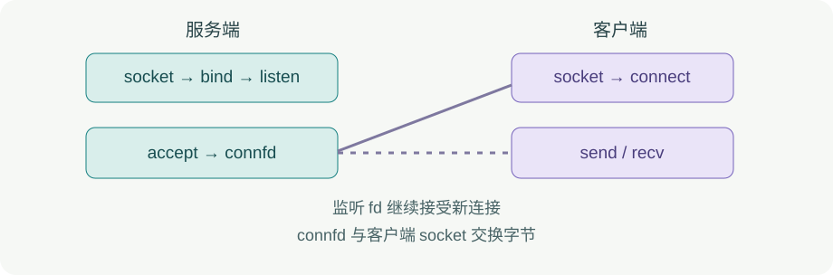
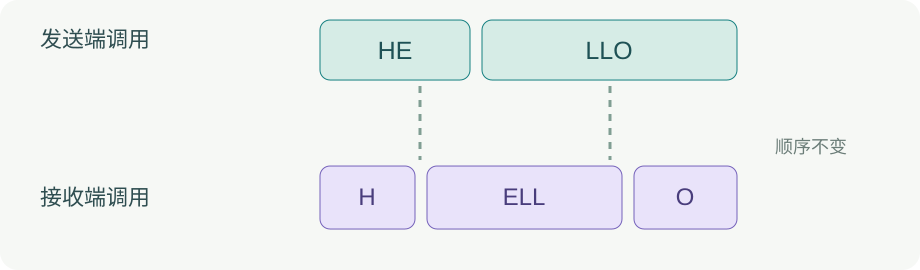

计算机系统 · 网络与协议 / 20
为什么一次 send() 不是一条消息？
同样是文件描述符，socket 却没有“写一次、读一次”的天然对应关系。把地址解析、TCP 连接、字节流和 HTTP 消息边界分开看，才不会把正常的分段传输误判成程序故障。
本章以 TCP 与 HTTP/1.1 的最小示例为主；真实 HTTPS 还包含 TLS，不能用纯 TCP 客户端假装完成 HTTPS 访问。
20.1 分层抽象：应用写的是字节，网络送的是分组
应用层定义内容语义（如 HTTP 请求）；传输层的 TCP 提供有序、可靠的字节流；网络层 IP 负责跨网络路由；链路层把分组封装成适合当前链路的帧。这是教学用的四层视图，并不意味着 DNS 属于 TCP、所有应用都使用 TCP，或一个应用写入一定对应一个 TCP 报文段。
在浏览器打开 HTTPS 网址时，通常还要完成域名解析、建立传输连接并进行 TLS 协商，具体次序和传输方式取决于协议版本及连接复用；HTTP/3 使用 QUIC 而不是 TCP。因此本章的 TCP 演示不是所有现代 Web 连接的唯一形式。
IP 数据报有自己的分组边界；TCP 向应用交付的是连续字节序列。应用层必须自行定义消息如何开始、何时结束。
20.2 从监听到连接：为什么服务器需要两个 fd？
TCP 服务端典型流程是 socket → bind → listen → accept，客户端是 socket → connect。listen 描述符负责接收新连接的请求；成功的 accept 返回另一个已连接描述符，读写应该发生在后者上。原监听描述符通常继续留着接受下一位客户端。

一个 TCP 连接通常用源 IP、源端口、目的 IP、目的端口四元组标识（并结合传输协议）。把“一个 socket 由 IP + 端口唯一标识”套到所有已连接 socket 上是不准确的：同一监听端口可以同时服务多个不同客户端。IP 地址标识网络接口/地址，不直接等同于某个进程。
/* 以下是调用顺序示意，不是完整可编译服务器 */
int listenfd = socket(AF_INET, SOCK_STREAM, 0);
/* 先准备 sockaddr_in、考虑 SO_REUSEADDR 和错误处理 */
bind(listenfd, (struct sockaddr *)&addr, sizeof addr);
listen(listenfd, SOMAXCONN);
int connfd = accept(listenfd, NULL, NULL); /* 新的已连接 fd */
/* 在 connfd 上读写；处理结束后 close(connfd) */
上述片段省略了地址结构体定义、返回值检查及并发、超时和关闭策略，不能直接当作生产服务器。实际程序应对端口占用、EINTR、资源限制及 IPv4/IPv6 等情况作出处理。
20.3 TCP 没有应用消息边界：拆分与合并都正常
假设发送端先 send("HE")，再 send("LLO")。对端可能一次读到 HELLO，也可能分成多次读取。TCP 保证字节顺序（只要连接正常且数据确实成功传送），不保证接收方每次 recv 的大小、边界与发送调用吻合。接收方还可能在任何一轮读到比请求少的字节。

动一动：同一个 HELLO 可以分成几次接收？
本交互只展示合法的分段示例，不模拟 TCP 时序、拥塞控制或真实内核的返回值。
这就需要应用层分帧：固定长度、长度前缀、分隔符或协议特定编码（如 HTTP 的消息体长度规则）。若仅因为某次 read 返回了 3 就判断“对端只发了 3 个字节”，会错误截断消息。
20.4 HTTP/1.1：消息边界由协议定义
HTTP/1.1 请求由起始行、头字段、空行、可选正文组成。行结束使用 CRLF（\r\n）。Host 是 HTTP/1.1 请求的重要必需字段；连接是否复用、正文边界如何判断，需要结合请求方法、响应状态、Content-Length、Transfer-Encoding 及连接关闭等语义处理，绝不能“一次 recv 就是一条 HTTP 消息”。
GET /index.html HTTP/1.1\r\n
Host: localhost:8080\r\n
Connection: close\r\n
\r\n上面以可见转义序列呈现报文的字节结构，实际传输时 \r\n 是两个控制字节，而非反斜杠字母。Connection: close 便于教学客户端读取到 EOF，但不等同于 HTTP/1.1 默认要求每次关闭连接。响应状态码、头部与消息体也必须按协议解析。
若响应含 Content-Length: 12，在读完头部之后还应精确读取 12 个正文八位组；若使用 Transfer-Encoding: chunked，则按分块编码解析。与不同步或冲突的长度字段有关的情况还有安全影响，不能随意猜测结束位置。
20.5 getaddrinfo()：程序不必把自己写死在 IPv4 上
不用一开始就假设地址是 sockaddr_in。getaddrinfo(node, service, hints, &result) 可返回一组候选的 IPv4/IPv6 地址，适合分别尝试建立连接或绑定。服务端在 node == NULL 时使用 AI_PASSIVE 常能得到通配监听地址；它不是所有客户端查询都要设置的标志。
下面的独立程序只枚举地址，不尝试联网建立 TCP 连接，适合先观察本机解析结果；具体候选项和顺序取决于系统配置、DNS 或 hosts 文件。
#define _POSIX_C_SOURCE 200809L
#include <netdb.h>
#include <stdio.h>
#include <string.h>
int main(int argc, char **argv) {
if (argc != 2) { fputs("usage: resolve HOST\n", stderr); return 2; }
struct addrinfo hints = {0}, *head = NULL;
hints.ai_family = AF_UNSPEC; /* IPv4 + IPv6 */
hints.ai_socktype = SOCK_STREAM; /* TCP */
int rc = getaddrinfo(argv[1], "80", &hints, &head);
if (rc != 0) { fprintf(stderr, "%s\n", gai_strerror(rc)); return 1; }
for (const struct addrinfo *p = head; p; p = p->ai_next) {
char host[NI_MAXHOST], service[NI_MAXSERV];
int n = getnameinfo(p->ai_addr, p->ai_addrlen,
host, sizeof host, service, sizeof service,
NI_NUMERICHOST | NI_NUMERICSERV);
if (n == 0) printf("%s:%s\n", host, service);
}
freeaddrinfo(head);
return 0;
}尝试 cc -std=c11 -Wall -Wextra resolve.c -o resolve && ./resolve localhost。getaddrinfo 的错误码由 gai_strerror 解释，不应直接将其当作 errno；使用后必须调用 freeaddrinfo。某些平台需要不同的头文件功能宏或库配置。
20.6 自测：收到了 2 字节，还缺几个？
协议定义消息是 4 字节大端长度前缀 + 正文。前缀给出长度 5；你第一次 recv 只收到正文前 2 字节。现在是否可以交给应用解析完整消息？下一次应该读取多少字节？
查看推导
不可以。前缀表明正文恰好应有 5 字节，目前只有 2 字节，还需累计 3 字节（可能需要多次读取）。还应在分配内存前校验长度上限，并区分 EOF 与暂时没数据。
资料与边界
协议格式以 RFC 9112（HTTP/1.1） 为准；套接字和名称解析可查 socket(2)、accept(2)、getaddrinfo(3)。下一章继续讨论连接很多时该如何调度。